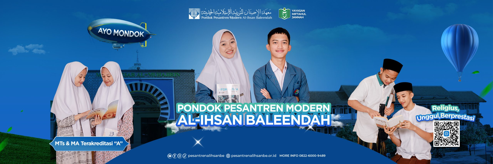

Our Strengths
"Religius - Unggul - Berprestasi"
Terakreditasi A
MTs / MA Pesantren Al-Ihsan terakreditasi A
Shalat Berjamaah
Pembiasaan shalat 5 waktu berjamaah di mesjid
Arab Dan Inggris
Pembiasaan komunikasi bahasa arab dan inggris
Tahfidz & Tilawah
Tahfidz dan Tilawah dengan sistem murojaah harian
Kurikulum Nasional 100%
Menggunakan kurikulum kementrian agama dan kurikulum merdeka
Kurikulum Gontor 100%
Menggunakan kurikulum kulliayatul mu'alimin al-islamiyah (KMI)
Tenaga Pendidik Terbaik
Asatidz & asatidzah yang berkompeten mulai dari S1 sampai profesor
Lulusan Tembus Kampus Unggulan
Mencetak lulusan terbaik yang tersebar di universitas unggulan